Fiecare adopție salvează o viață
Fiecare blănos de aici își dorește un singur lucru: o casă unde să se simtă în siguranță și iubit. Adoptând, nu doar salvezi o viață, ci îți faci un prieten loial pentru totdeauna.

Ben
O familie și pentru mine? Frații mei sunt la ei acasă. Promit să fiu cuminte, să nu vă rod papucii și să vă iubesc toată viața mea. Sunt sănătos tun și am carnet de sănătate la zi. Mă cheamă Ben, am răbdare și sunt foarte prietenos atât cu cățeii cât și cu pisicile. Vreau să ajung pe mâini bune.

Pipa
Foarte prietenoasă, cuminte și drăgălașă. Se înțelege foarte bine cu cățeii și pisicile. Se comportă exemplar și în casă. În mașină îi place foarte mult și merge și cu lesa.

Feli
O dulceață de cățelușă, jucăușă, energică și foarte prietenoasă. Iubește cățeii, pisicile, oamenii și adoră să stea în brațe și să fie alintată. Este o companie minunată, ideală pentru orice familie.

Bella
Bella este o fetiță minunată, blândă și dornică de afecțiune. Așteaptă cu nerăbdare o familie care să îi ofere șansa de a fi iubită. Bella își caută omul sau îngerul de la distanță!

Clara
Clara este o frumusețe de talie medie, sora lui Caramel. Este o fetiță blândă, afectuoasă și dornică de iubire. Îi place compania oamenilor, se bucură de fiecare mângâiere și are nevoie de un loc pe care să îl poată numi „acasă". O prietenă loială, mereu pregătită să vă întâmpine cu bucurie.

Delia
Ea abia și-a început noua viață. Recent sterilizată și ajunsă de curând la noi, această fetiță dulce privește cu timiditate tot ce este nou în jurul ei. În spatele ochilor curioși se ascunde un suflet blând și iubitor, gata să ofere toată afecțiunea sa celui care îi va deschide inima și casa.

Ștefan
Ștefan are doar 7 luni și deja a trecut printr-o despărțire pe care nu a înțeles-o. S-a întors la noi după ce familia care l-a adoptat și-a vândut casa și nu l-a mai putut păstra. Este un cățel iubitor, jucăuș și plin de viață, care își caută din nou o familie pe care să o numească „acasă".

Miruna
O uriașă cu suflet de aur! Blândă, iubitoare și puțin timidă la început, dar odată ce îți oferă încrederea ei, te va iubi din toată inima. Gata să-și găsească familia! Nu poți adopta acasă? Adoptă de la distanță! Printr-o donație lunară, ajuți la hrana, îngrijirea și tratamentele unui suflet aflat în adăpost.

Dolfa
Dolfa poate nu mai este un pui, dar are un suflet uriaș. Plină de iubire, super ascultătoare și mereu pregătită de plimbări, își caută familia care să îi ofere șansa pe care o merită. Nu poți adopta acasă? Adoptă de la distanță! Printr-o donație lunară, ajuți la hrana, îngrijirea și tratamentele unui suflet aflat în adăpost.

Thor
Thor este un suflet special, ambasadorul cățeilor cu dizabilități. Deși este paralizat pe partea din spate, nu a renunțat niciodată să lupte. Are o voință uriașă și o privire caldă, demonstrând că valoarea unui suflet nu stă în perfecțiune, ci în puterea de a merge înainte. Caută o familie care să îi ofere iubirea pe care o merită din plin.

Mcqueen
Mcqueen este o fetiță superbă care încă se teme de oameni, dar în fiecare zi face pași înainte. Viața nu a învățat-o să aibă încredere, însă ea descoperă acum că mâinile oamenilor pot aduce mângâieri, nu frică. Își așteaptă omul răbdător, alături de care să învețe că iubirea există.

Carmela
Carmela este varianta lui Caramel în miniatură! O fetiță adorabilă, la fel de iubitoare și dornică de afecțiune, care iubește să se lipească de oameni și să îi îmbrățișeze. Caută o familie care să îi ofere iubirea și răsfățul pe care le merită din plin.
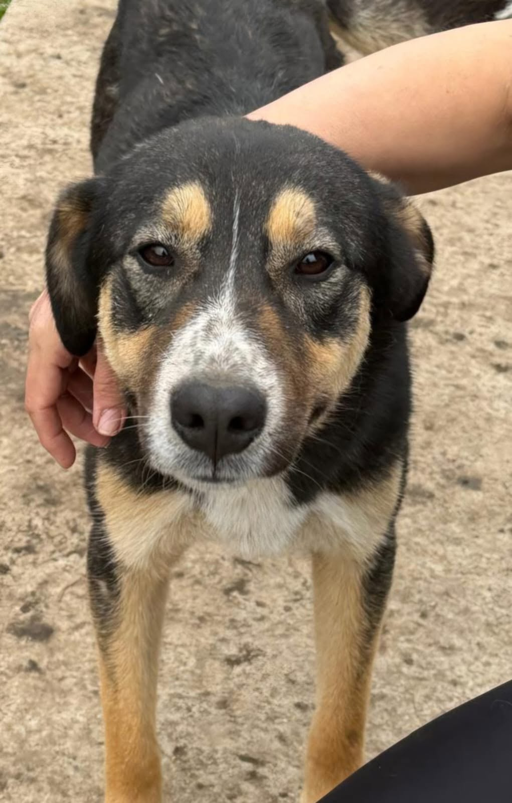
Negruțu
Negrutu este tot ce îți poți dori într-un câine și încă mai mult. Salvat împreună cu mama și frații săi, acest băiețel de 10 luni este echilibrat, blând, jucăuș și loial. Este foarte cuminte, nu strică lucruri prin casă și are chiar spirit de paznic. Își caută familia alături de care să crească frumos.
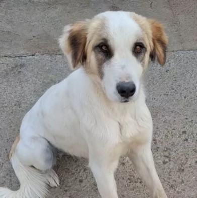
Kataleea
Kataleea este o cățelușă tânără, cu ochi de căprioară, salvată împreună cu cei 5 pui ai săi (care între timp și-au găsit deja familii). Este o fire extrem de cuminte și blajină, care nu roade și nu strică lucrurile. O companie minunată care merită din plin șansa la un cămin iubitor.
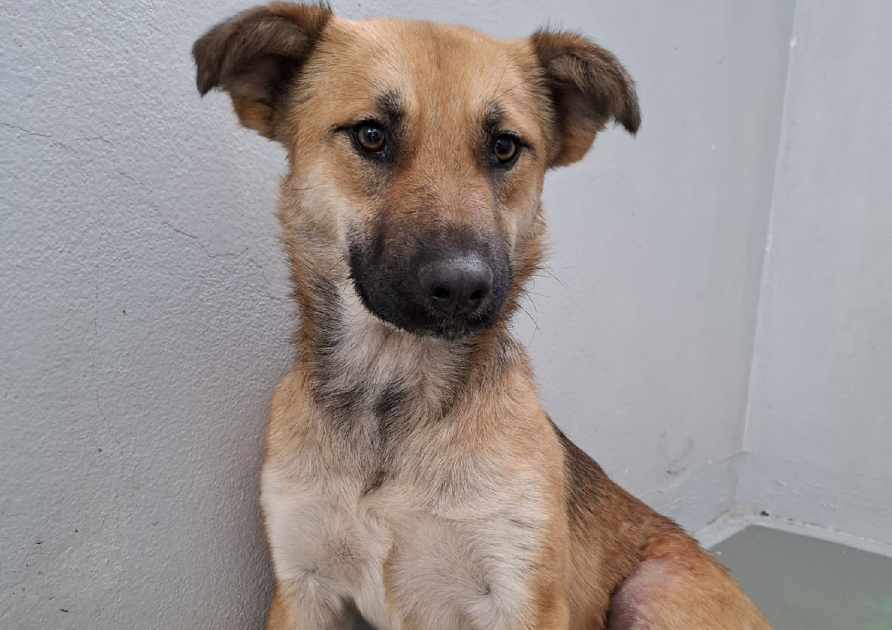
Cezara
Cezara este o cățelușă tânără și blândă, numită astfel pentru asemănarea ei cu Cezar. A fost salvată într-o stare dificilă, dar a impresionat tot personalul medical prin blândețea cu care a acceptat tratamentele pentru tăietura de la picior (acum complet vindecată). Este jucăușă, voioasă și plină de viață, așteptându-și familia care să o iubească așa cum merită.
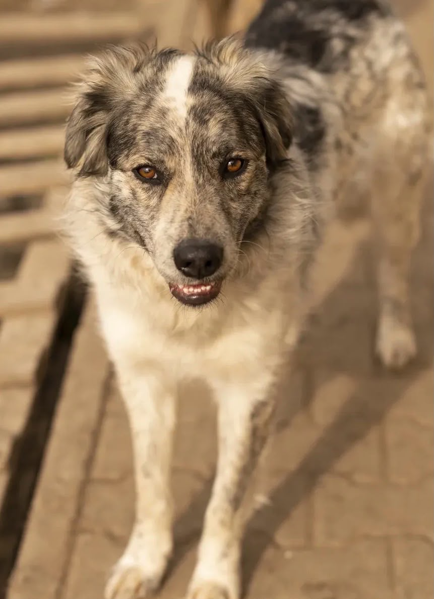
Rollo
Rollo este un câine calm și cumpătat care creează o legătură profundă cu puțini oameni, nu cu toată lumea din prima clipă. Caută o familie care să vadă dincolo de cele două adopții eșuate și să îi ofere timpul necesar pentru a se simți, în sfârșit, acasă.
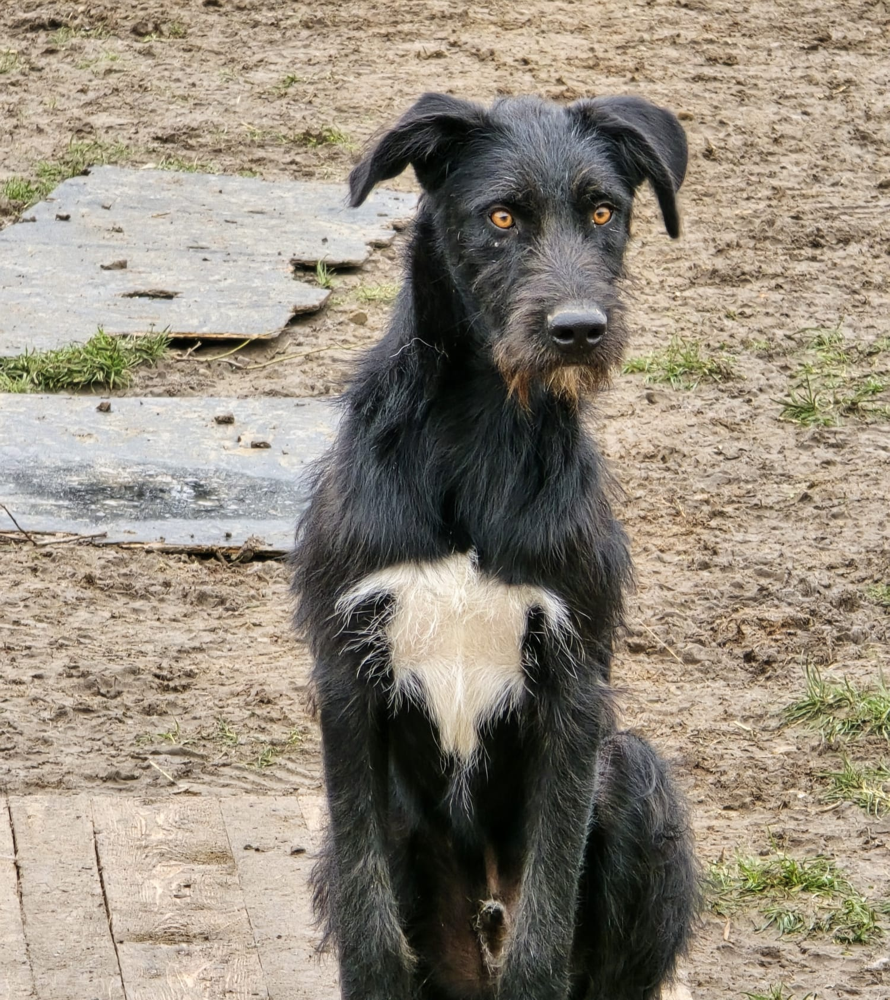
Gypsy
Am aproximativ 1 an și jumătate și fac parte din cei 8 pui abandonați pe drumul dintre Giarmata Vii și Ghiroda. Viața nu m-a învățat prea ușor să am încredere în oameni. Sunt foarte speriată, nu mă simt confortabil în preajma copiilor, iar lesa este ceva ce încă nu am învățat să folosesc. Caut un om calm, blând și răbdător, care să accepte că voi avea nevoie de timp. Dacă îmi vei oferi șansa asta, promit să fac pași mici, dar sinceri, spre tine.
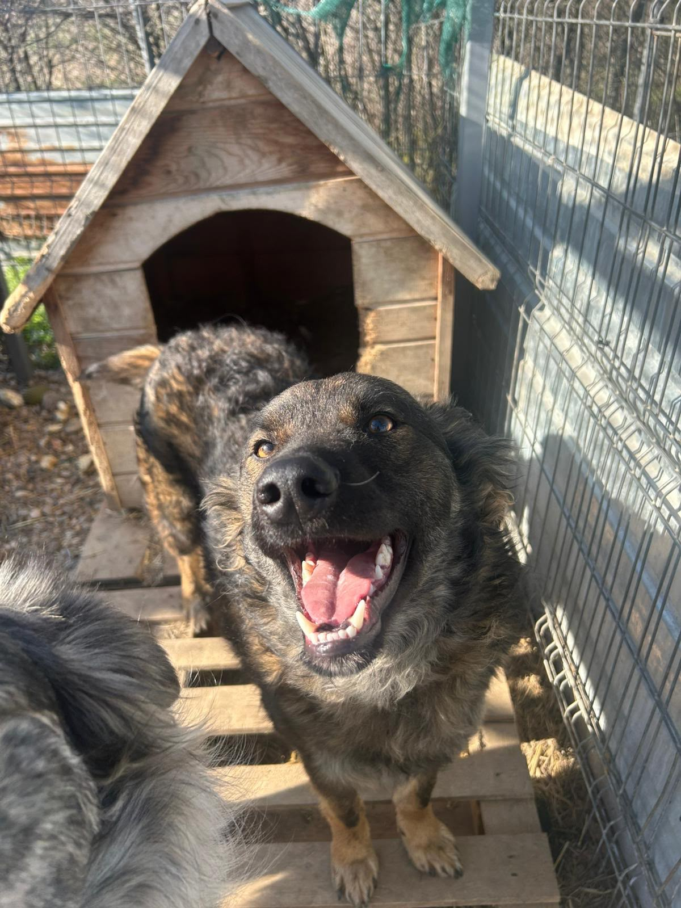
Bombix
Un băiat tânăr, curios și mult mai sensibil decât lasă să se vadă…și puțin sperios. Caută pe cineva care să nu se sperie de frica lui și să-i arate, pas cu pas, că lumea poate fi un loc sigur.
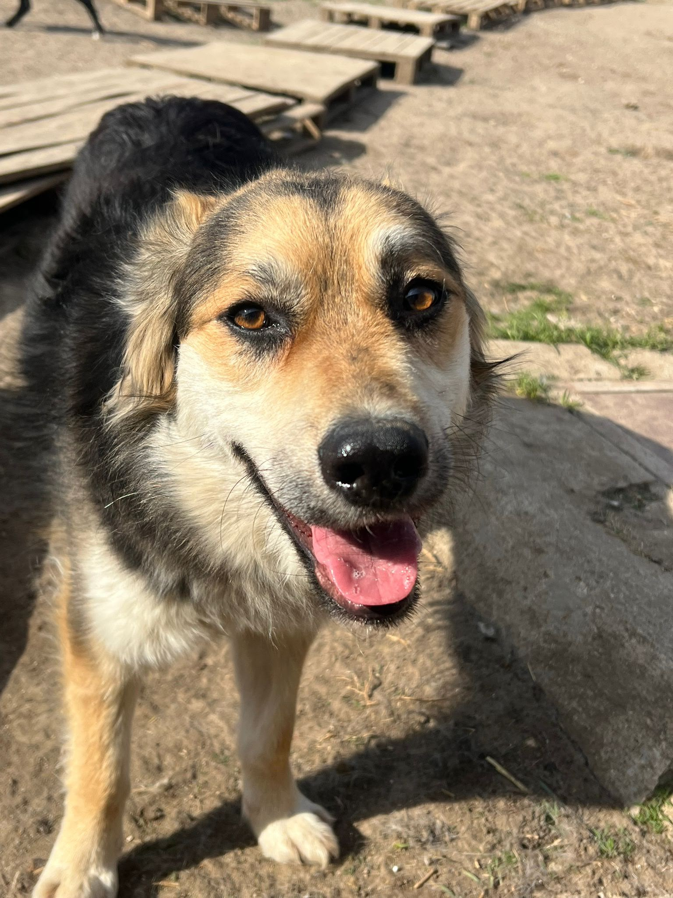
Twix
Este un cățel timid. Oamenii noi, locurile noi și zgomotele îl cam sperie. Dar dacă îi dai timp și răbdare, începe să aibă încredere. Nu caută o familie perfectă. Caută oameni care să înțeleagă că are nevoie de timp.
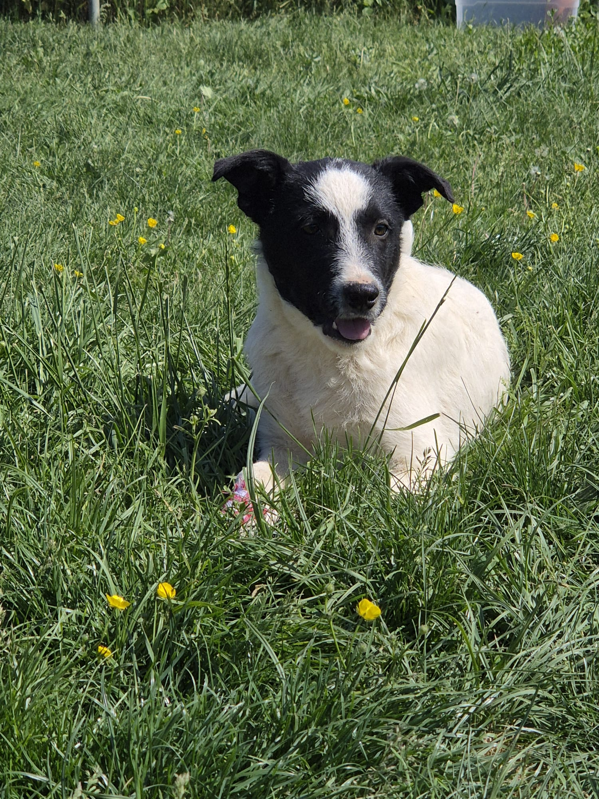
Donna
Am aproximativ 1 an și jumătate și sunt una dintre cei 8 pui abandonați pe drumul dintre Giarmata Vii și Ghiroda. Sunt o cățelușă foarte timidă și încă mă sperii ușor de lucruri pe care alți câini poate le consideră normale. Nu prea mă împac cu agitația copiilor și nici mersul în lesă nu face parte din lucrurile pe care le cunosc. Am nevoie de o familie care să înțeleagă că adaptarea mea va dura. Dacă ai răbdare, blândețe și nu te aștepți să fiu câinele perfect din prima zi, poate că eu sunt sufletul care îți lipsește.
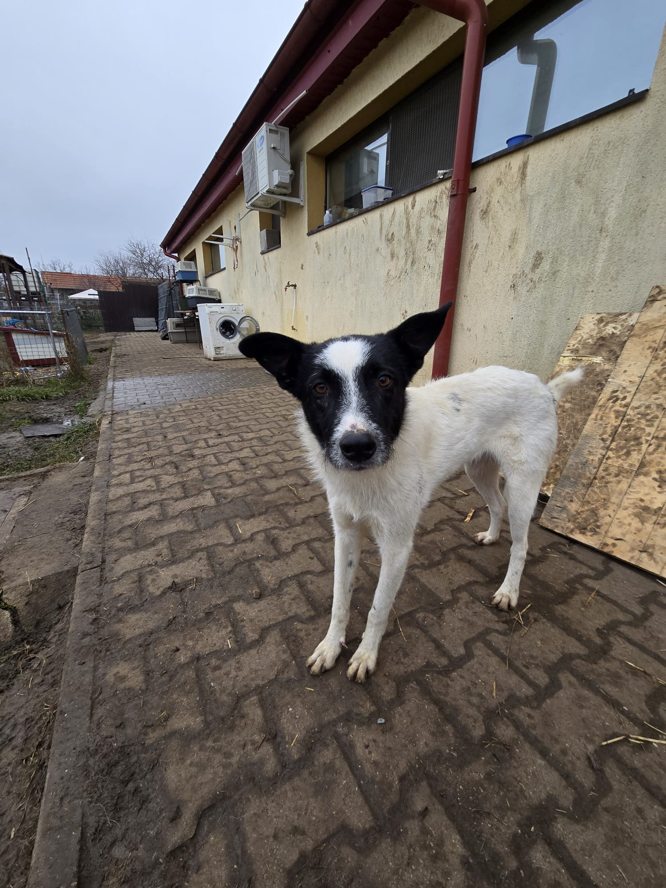
Creepy
Am aproximativ 1 an și jumătate și sunt unul dintre cei 8 pui abandonați pe drumul dintre Giarmata Vii și Ghiroda. Încă mă tem de multe lucruri și am nevoie de foarte mult timp până să am încredere într-un om. Nu sunt obișnuit cu copiii și nici nu știu să merg în lesă. Am nevoie de un adoptator cu experiență sau de cineva dispus să învețe alături de mine, fără grabă și fără așteptări nerealiste. Pentru omul potrivit, sunt convins că pot deveni un prieten loial și recunoscător.
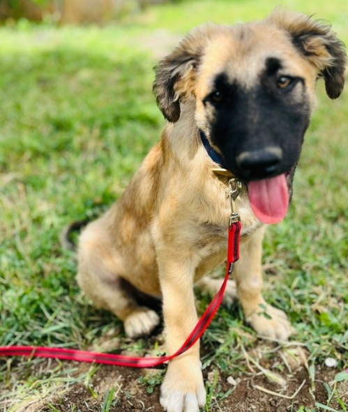
Lucky
Se pregătește să devină un câine de talie medie-mare. Este calm, drăguț și visător. Dorește o familie bună, în care se va adapta ușor la: casă, pe canapea, în mașină... cam peste tot.
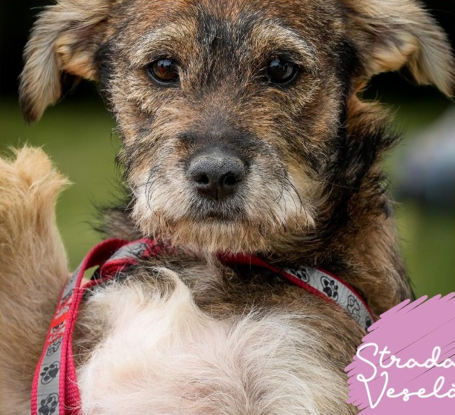
Iris
Ea este cel mai energic și curajos copil pe care l-ați putea iubi! Tot ce își dorește mai mult pe această lume este să fie ținută în brațe și face tot ce poate să obțină asta. Are nevoie de un stăpân plin de iubire și cu nervi de oțel.
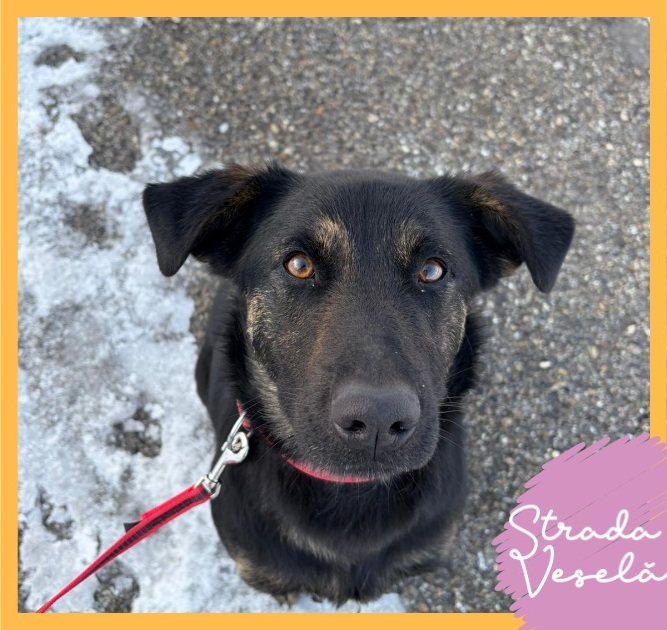
Bitsy
Este o cățelușă cuminte, docilă și cu un temperament extrem de cald. Poate locui cu alți câini, deși este puțin timidă la început. Ea are nevoie de o familie răbdătoare și blândă care să îi ofere timp pentru a se acomoda și a-și arăta întreaga afecțiune. Oferă-i o șansă!
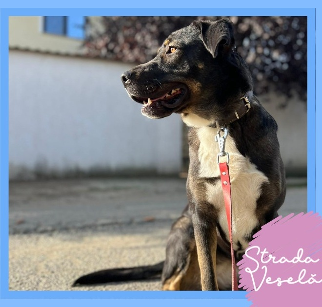
Lara
Este echilibrată, inteligentă, loială și extrem de prietenoasă cu oamenii, copiii și cu alți câini. Este obișnuită cu plimbările zilnice în lesă. Are nevoie de o familie devotată care să îi ofere afecțiune, socializare și acces la interior și exterior.
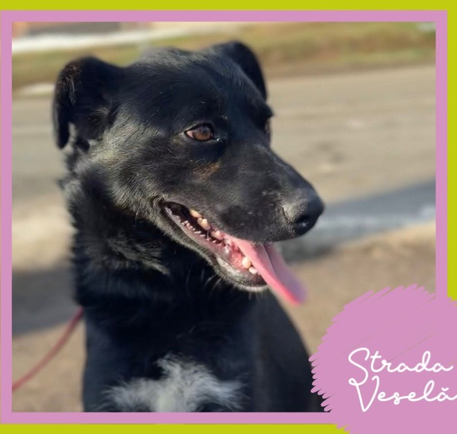
Rocky
Toată copilăria și-a petrecut-o în lanț, apoi a trecut printr-o adopție eșuată deoarece energia și bucuria lui de copil au fost "prea mult". Este tânăr și energic, capabil să învețe multe, dacă i se oferă timp și iubire.
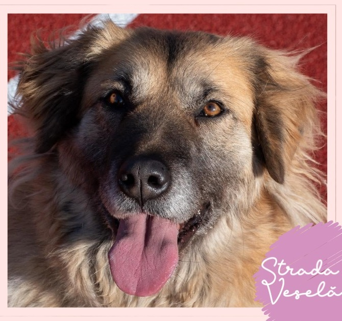
Laica
Trecută prin abandon, Laica este o cățelușă blândă, extrem de afectuoasă și ascultătoare. Se înțelege minunat cu copiii și este obișnuită să meargă în lesă. Ea are nevoie de o familie care să îi ofere iubire și confort, măcar la fel de mult pe cât poate oferi ea.
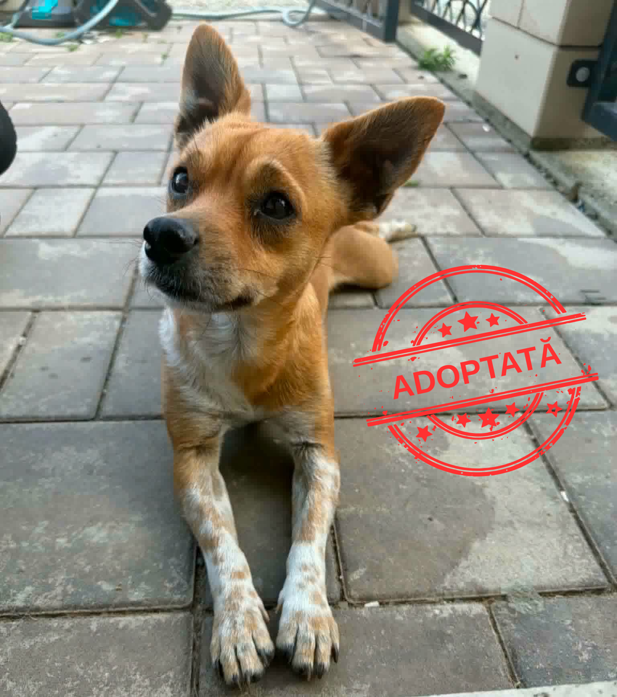
Frida
Frida este o cățelușă foarte iubitoare, ideală pentru apartament sau casă. Merge cu lesa și se înțelege bine cu alți câini. Nu prea agreează pisicile (e puțin geloasă). A fost găsită pe străzi împreună cu puiul ei și acum își caută o familie care să îi ofere iubirea pe care o merită.
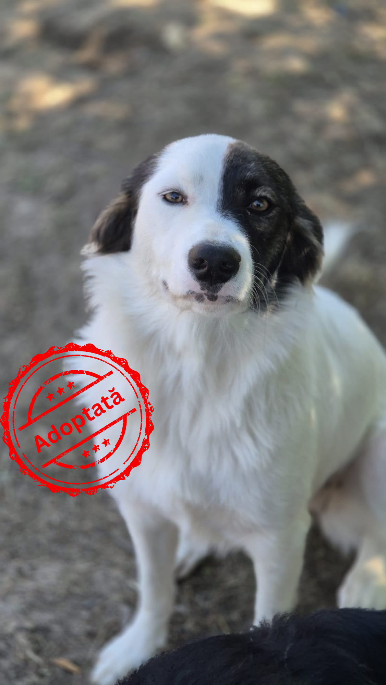
Milky
O fetiță sensibilă și blândă. Nu-i place să se certe cu nimeni și preferă îmbrățișările în locul competițiilor. Nu visează la lucruri complicate. Doar la o casă liniștită, un bol plin și un om care să o aleagă.